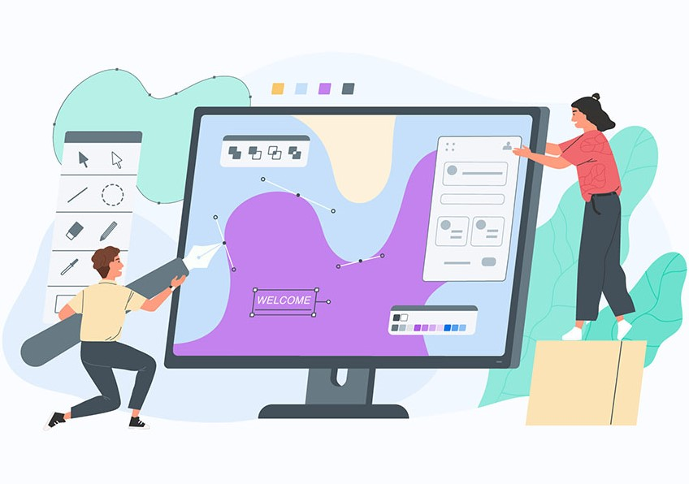

Fecha: 18-06-23
El diseño web es un campo en constante evolución y, a lo largo de los años, ha habido muchas creencias comunes arraigadas que a menudo se consideran verdades incuestionables. Sin embargo, es esencial desafiar y cuestionar estos mitos para impulsar la evolución y la mejora en el diseño web. En este artículo, exploraremos algunos mitos comunes y presentaremos ideas contraintuitivas que desafían estos prejuicios establecidos. Descubriremos que la simplicidad vs. complejidad, los colores no convencionales y el diseño centrado en la experiencia de usuario (UX) son temas clave que merecen una reevaluación.
Simplicidad vs. complejidad: Un mito común en el diseño web es que la simplicidad siempre es mejor. Si bien la simplicidad puede ser efectiva en muchos casos, también existe un lugar para la complejidad en el diseño web. La complejidad bien ejecutada puede proporcionar una experiencia rica y envolvente para los usuarios. No debemos temer a la complejidad, sino aprender a utilizarla estratégicamente para mejorar la interacción y la usabilidad del sitio web.
Colores no convencionales: Otro mito arraigado es que el diseño web debe seguir una paleta de colores estándar y predecible para ser efectivo. Sin embargo, la elección de colores no convencionales puede ser una forma efectiva de destacar y diferenciarse. La combinación inesperada de colores puede captar la atención del usuario y transmitir una personalidad única para la marca o el sitio web. Es esencial experimentar y encontrar una combinación de colores que se adapte a la identidad de la marca y a los objetivos del diseño.
Diseño centrado en la experiencia de usuario (UX): A menudo, se subestima la importancia del diseño de UX en favor del diseño visual. Si bien la apariencia visual es importante, no debemos olvidar que el diseño de UX juega un papel crucial en la satisfacción del usuario. La experiencia de los usuarios en un sitio web puede afectar significativamente su percepción y, en última instancia, determinar si regresan o no. Por lo tanto, debemos centrarnos en aspectos como la facilidad de uso, la accesibilidad y la fluidez de la navegación. El diseño de UX debe tener como objetivo principal brindar una experiencia agradable y fluida para los usuarios, y esto puede implicar sacrificios en términos de diseño visual para lograr una funcionalidad y facilidad de uso óptimas.
Romper con los diseños convencionales: Muchas veces, el diseño web se adhiere a patrones preestablecidos y convencionales, lo que resulta en una falta de originalidad y creatividad. Romper con estas convenciones puede conducir a experiencias únicas y memorables para los usuarios. Al pensar de manera innovadora y creativa, podemos encontrar nuevas formas de presentar información, interactuar con los usuarios y mejorar la usabilidad del sitio web. Sin embargo, es importante tener en cuenta que la experimentación debe equilibrarse con la usabilidad y la comprensión del público objetivo.